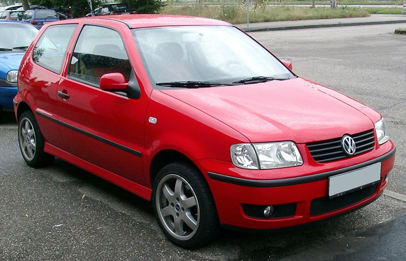

Volkswagen Polo III
Etusivu
Yhteystiedot
Volkswagen Polo I
Volkswagen Polo II
Volkswagen Polo III
Kolmannen sukupolven Polo esiteltiin vuonna 1994 täysin uudella muotoilulla, jossa oli pehmeämpiä ja aerodynaamisempia linjoja. Tämä oli myös ensimmäinen Polo, joka oli saatavilla viisiovisena, mikä lisäsi sen houkuttelevuutta perheautona. Turvallisuus nousi entistä tärkeämpään asemaan, ja varusteluun lisättiin muun muassa ABS-jarrut ja turvatyynyt. Vuonna 1999 Polo sai kasvojenkohotuksen (6N2), jossa päivitettiin sisustusta ja lisättiin uusia moottorivaihtoehtoja. Tämä malli tunnettiin myös hyvästä ajomukavuudestaan ja taloudellisuudestaan.

Autot on parhaita! Autot on parhaita! Autot on parhaita! Autot on parhaita! Autot on parhaita! Autot on parhaita! Autot on parhaita! Autot on parhaita! Autot on parhaita! Autot on parhaita! Autot on parhaita! Autot on parhaita! Autot on parhaita! Autot on parhaita! Autot on parhaita! Autot on parhaita! Autot on parhaita! Autot on parhaita! Autot on parhaita! Autot on parhaita! Autot on parhaita! Autot on parhaita! Autot on parhaita! Autot on parhaita! Autot on parhaita! Autot on parhaita! Autot on parhaita! Autot on parhaita! Autot on parhaita! Autot on parhaita! Autot on parhaita! Autot on parhaita! Autot on parhaita! Autot on parhaita!
_5-door_hatchback_(2015-07-10)_01.jpg)